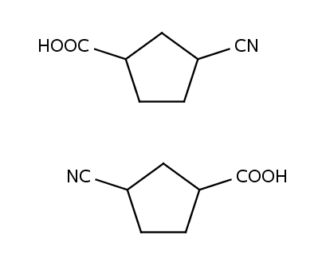
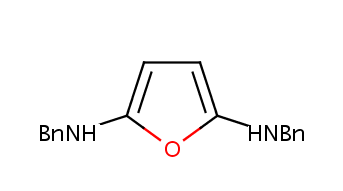
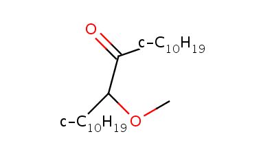

Codename: abbrevgroup
Abbreviated groups are stored in a TAB-delimited text file called default.abbrevgroup. The basic format is:
Ac CC=O 2
AcAc CC(=O)CC(=O) 5
Acet CC=O 2
Ade NC1=C2N=CNC2=NC=N1 6 1
Please make sure the words are separated by TAB characters not by spaces.
In these lines the very first word is the abbreviation, the second is the SMILES string representing the molecule fragment depicted by the abbreviation. These are followed by one or two numbers that are the number(s) of link nodes (atoms) in the SMILES string. In the first line using the Ac abbreviation the second carbon is the link when the group is connected to an other molecule. If there is no number following the the SMILES string the abbreviated group can not be linked to other atoms. Furtheremore the maximal number of link nodes are two.
Usually the bond points towards the middle of the abbreviation but when the string contains atom symbols, probably we want to make it point to the symbol of the bonding atom. Furthermore it is desirable to flip the abbreviation when the group is in the opposite side:
To achieve the flipping effect one have to provide the alternative name of the abbreviated group that will be printed on the left side of the molecule:
CN C#N 1 leftName=NC
CO2Et CCOC=O 4 leftName=EtO2C
CO2H OC=O 2 leftName=HO2C
COOH OC=O 2 leftName=HOOC
COOiAm CC(C)CCOC=O 7 leftName=iAmOOC
If the abbreviation contains numbers, those will be treated as subscripts:
C10H21 CCCCCCCCCC 1 leftName=H21C10
CBr3 BrC(Br)Br 2 leftName=Br3C

Additionally there can be groups where it is good to have flipping abbreviations but the string represents the form that is used on the left side. For these groups (for example AcO, MeO) the rightName specifier can be used:
BnNH NCC1=CC=CC=C1 1 rightName=HNBn
BnO OCC1=CC=CC=C1 1 rightName=OBn
BnO2C O=COCC1=CC=CC=C1 2 rightName=CO2Bn
BnOOC O=COCC1=CC=CC=C1 2 rightName=COOBn

If you do not want to flip an abbreviation but want to be sure that the bond points to an atom symbol and not to the middle of the string, you still can define the center specifier:
c-C10H19 C1CCCCCCCCC1 1 center=AUTO
c-C11H21 C1CCCCCCCCCC1 1 center=AUTO
c-C12H23 C1CCCCCCCCCCC1 1 center=AUTO

This option allows to point to the very first character in the abbreviated group string that is the same as the atom symbol of the binding atom. This option makes it possible to fine-tune the position of the bond to point to any of the characters.
From the 5.10 release extension possibilities have been introduced for the default built-in abbreviated groups.
A user can define abbreviated groups to be used in MarvinSketch in a file called user.abbrevgroup. This file has to be placed in the chemaxon settings directory that is located in the chemaxon or .chemaxon folder inside the home directory of the user.
For developers who are developing based on the MarvinBeans library, or who are using
the Marvin Applets package, it is possible to extend the abbreviated group list via
files that can be defined for usage in MarvinSketch with the help of the customAbbrevgroups
parameter.